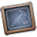

Using the Break Template
The break template is used as an intermission to your course. It is the simplest of all templates.
Using the Break Template:
- Compile the swf using ⌘-return and close your fla.
The break template is used as an intermission to your course. It is the simplest of all templates.
Using the Break Template: